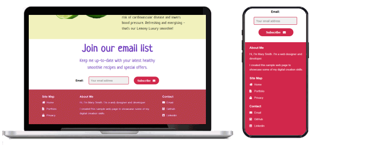
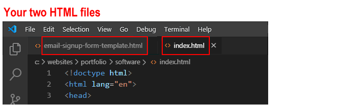
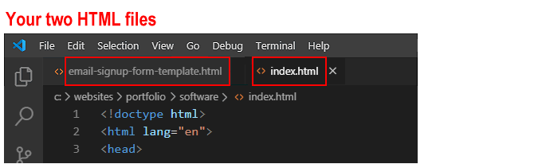
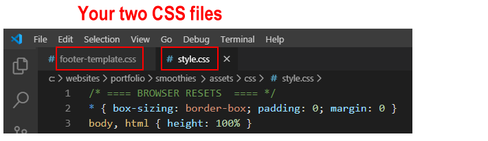
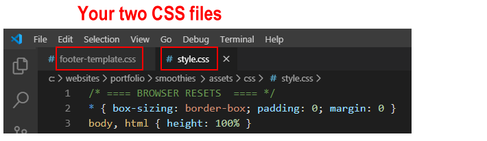

Introduction
In this task you will use template content to add a footer section to the 'Smoothies' project you created earlier and to which you then added an email sign-up form.
You can display a finished version of the project web page on GitHub by clicking the image below.

You can view the alternative version with the centred footer here.
Learning Goals
At the end of this Tutorial you will be able to:
- Copy selected HTML with text content from a template file to a sample web page.
- Copy selected CSS from a template file to a stylesheet for a sample web page.
- Edit the copied HTML and CSS as required.
Working with your two HTML files
You will begin by working with two HTML files:
- The template file you will copy from and
- The web page you will copy to.
Start Visual Studio Code.
- From your websites\templates folder, open one of the following two HTML files. You can choose whichever footer version you like best.
- footer-template.html
Link
-or-
- footer-template-2.html
Link
- From your websites\portfolio\smoothies folder, open your web page named index.html.
 If you have any other files open in Visual Studio, you may wish to close them.

This will help you to focus only on the two HTML files you will be working with.
If you have any other files open in Visual Studio, you may wish to close them.

This will help you to focus only on the two HTML files you will be working with.
Working with your two CSS files
Your next task is to work with two CSS files:
- The template CSS file you will copy from and
- The stylesheet you will copy to.
In Visual Studio Code:
- From your websites\templates folder, open one of the following two CSS files. Choose whichever one is for the footer template file you choose earlier.
-or-
- From your websites\portfolio\smoothies\assets\css folder, open your stylesheet named style.css.
 If you have any other files open in Visual Studio, you may wish to close them.

This will help you to focus only on the two CSS files you will be working with.
If you have any other files open in Visual Studio, you may wish to close them.

This will help you to focus only on the two CSS files you will be working with.
Upload your project to GitHub
Now your web page with the footer is ready to be uploaded to GitHub.
- Upload the index.html web page to the portfolio/smoothies/ folder of your GitHub account.
- Upload the style.css stylesheet to the portfolio/smoothies/assets/css/ folder of your GitHub account.
Your 'Smoothies' project web page with the footer form is now published on GitHub at a web address similar to the following, where username is the username you have chosen for your GitHub account:
https://username.github.io/portfolio/smoothies/index.html
or, simply:
https://username.github.io/portfolio/smoothies
It may take a few minutes for your uploaded files to appear on GitHub.
Return to Contents.